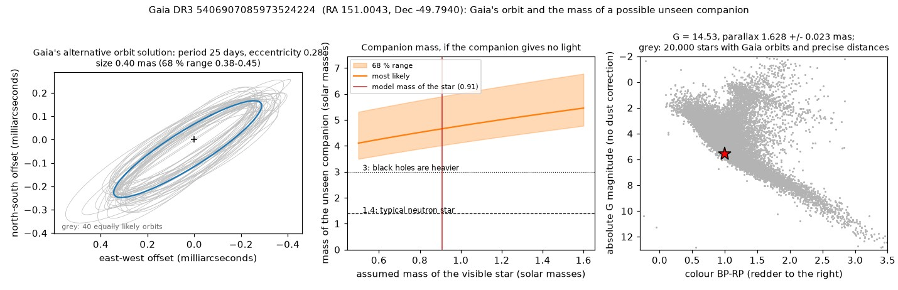
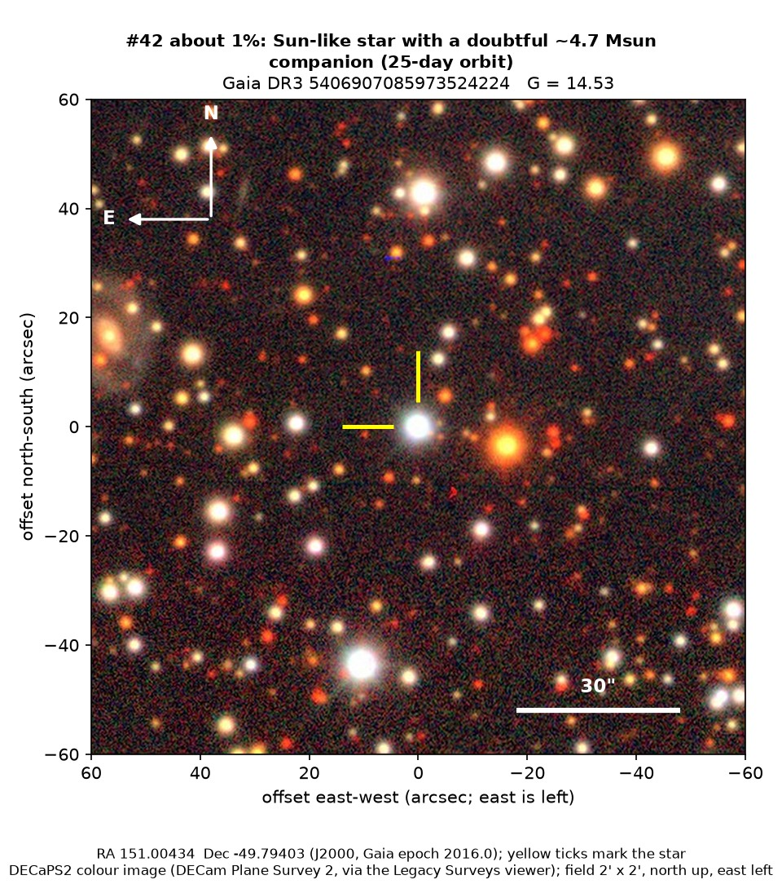

Professor of Mathematics
Paata Ivanisvili
Department of Mathematics, University of California, Irvine

Candidate 42: a Sun-like star with a doubtful 25-day wobble
Why this estimate. A black hole in a tight orbit around an ordinary star would be a major find, but spurious short-period Gaia orbits are far more common. This one fails the published significance cut for such orbits, comes from Gaia’s less reliable alternative solutions, and has no measurements along the line of sight to confirm it.
How to read the pictures. The orbit figure has three panels. On the left is the small ellipse that Gaia’s orbit traces on the sky, measured in thousandths of an arcsecond, with grey orbits that fit the data about equally well. In the middle is the mass the unseen companion would need for each possible mass of the visible star; the shaded band is the likely range, the red line marks the star’s estimated mass, and the dotted and dashed lines mark 3 and 1.4 solar masses, roughly where black holes begin and where a typical neutron star lies. On the right, the star (red) sits among other stars in Gaia’s diagram of colour against brightness. The finder chart shows a patch of sky two arcminutes across, about a fifteenth of the Moon’s width, with north up and east to the left; the star sits between the two yellow ticks, and the white bar is 30 arcseconds long.

What Gaia found. This is a Sun-like star, about 5,500 K, some 610 parsecs away in Vela. One of Gaia’s alternative orbit-fitting methods found a 25-day wobble that, for a star of about 0.9 solar masses, implies a companion of about 4.7 solar masses (4.0 to 5.9) giving off no visible light. If real, that would be a black hole in a tight orbit around an ordinary star.
Why the estimate is low. The solution fails the published significance cut that weeds out spurious short-period Gaia orbits (it reaches 20.7, where 31.6 is needed), it comes from Gaia’s less reliable alternative solutions, and there are no measurements of the star’s speed along the line of sight.
No record of a dark companion for this star could be found. The star is too far south for Pan-STARRS1 and ZTF, so there is no light curve.
- Star
- Gaia DR3 5406907085973524224, a Sun-like star
- Location
- RA 151.00434°, Dec −49.79403° (J2000), in Vela
- Distance
- about 610 parsecs (2,000 light-years)
- Brightness
- Gaia G = 14.5
- Probability
- This candidate is unconfirmed. The percentage under the title is an estimate of the chance that it is a real, previously unrecorded case of the kind described. The estimate has not been checked by outside experts. See the introduction to all fifty-eight candidates.
- Caveat
- The orbit fails the published significance cut, comes from a less reliable kind of Gaia solution, and no measurements along the line of sight confirm it.
